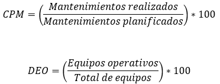

|
PSC 009 | Logística y Equipos
|
Ver.
000
|
|
|
Creado
por EGC | Aprobado por CEO
|
Fecha:
01.12.2024
|
Contenido
1.- Objetivo del Proceso................................................................................................................................................
2.- Alcance del Proceso................................................................................................................................................
3.- Matriz del Proceso...................................................................................................................................................
3.- Recursos del proceso..............................................................................................................................................
3.1.- Recursos.............................................................................................................................................................
3.2.- Responsables......................................................................................................................................................
4.- Seguimiento...........................................................................................................................................................
4.1 Metodología...........................................................................................................................................................
4.2.- Indicadores..........................................................................................................................................................
5.- Análisis y evaluación de riesgos del proceso.............................................................................................................
6.- Análisis y evaluación de oportunidades del proceso...................................................................................................
8.- Historial de Versiones.............................................................................................................................................
1.-
Objetivo del Proceso
Asegurar la disponibilidad, operatividad y distribución eficiente
de los recursos materiales, equipos e insumos necesarios para las operaciones
de la organización, garantizando el cumplimiento de los objetivos
estratégicos.
2.-
Alcance del Proceso
El proceso abarca desde la planificación de necesidades logísticas,
gestión de inventarios y mantenimiento preventivo de equipos, hasta
la distribución y seguimiento de los recursos en todas las áreas
de la organización.
3.- Matriz del Proceso
| ENTRADAS | PROCEDIMIENTOS (actividades) | SALIDAS |
|
Requerimientos
de equipos y recursos.
|
Identificación
de necesidades logísticas y adquisición de equipos
adecuados.
|
Equipos
adquiridos y registrados.
|
|
Plan
de mantenimiento preventivo.
|
Ejecución
de tareas de mantenimiento para asegurar la operatividad de los
equipos.
|
Informe
de mantenimiento realizado.
|
|
Inventarios
de recursos y equipos.
|
Gestión
de inventarios para asegurar la disponibilidad y evitar faltantes.
|
Inventarios
actualizados..
|
| Cronogramas de distribución y uso de equipos. | Planificación de la distribución y asignación de recursos según las operaciones. | Cronograma de uso y distribución. |
|
Indicadores
de desempeño de logística y equipos.
|
Monitoreo
de eficiencia en el uso y mantenimiento de los equipos.
|
Informes
de desempeño logístico.
|
3.-
Recursos del proceso
3.1.- Recursos
Para este proceso
de Logística y Equipos se requieren:
- Humanos: Personal de logística, técnicos de mantenimiento y supervisores de almacén.
- Financieros: Presupuesto para adquisición, mantenimiento y distribución de equipos e insumos.
- Tecnológicos: Sistemas de gestión logística (WMS) y herramientas para el monitoreo de equipos.
- Información:
Registros de inventarios, órdenes de mantenimiento y requerimientos
de distribución.
3.2.- Responsables - Departamento de logística
- Técnicos de mantenimiento
- Líderes
de áreas operativas.
4.- Seguimiento
4.1 Metodología
. El seguimiento del proceso de Logística y Equipos se realiza mediante:
- Monitoreo del cumplimiento de los tiempos de entrega y distribución.
- Evaluación periódica de la rotación y disponibilidad de inventarios.
- Revisión del cumplimiento del plan de mantenimiento preventivo.
- Implementación de indicadores de desempeño logístico y operatividad de equipos.
- Gestión
de acciones correctivas o preventivas en caso de incumplimientos.
4.2.- Indicadores
% de cumplimiento del plan de mantenimiento.
% de disponibilidad de equipos operativos.
(Mide el desempeño del Proceso 013)

Justificación:
Un cumplimiento del 95% en mantenimiento garantiza la operatividad de
los equipos. Una disponibilidad del 98% asegura que las operaciones no
se vean afectadas.
Fuente de Datos: Informes de mantenimiento, registros de inventarios.
Frecuencia de Evaluación: Trimestral, con revisión
anual.
Plan de Acción: Si los indicadores están fuera de
rango, se implementarán medidas correctivas como ajustes en cronogramas
o adquisiciones adicionales.
5.-
Análisis y evaluación de riesgos del proceso
La evaluación
de riesgos en el proceso de Logística y Equipos incluye:
- Falla en equipos por falta de mantenimiento preventivo.
- Retrasos en la distribución de recursos.
- Pérdida
o daño de equipos debido a una gestión inadecuada.
6.- Análisis y evaluación de oportunidades del proceso
- Automatización
de Inventarios: Uso de tecnología para rastreo y monitoreo en
tiempo real.
- Optimización
de Rutas Logísticas: Implementación de software para planificación
de rutas.
- Contratos
de Mantenimiento Externo: Colaboración con especialistas para
mejorar la eficiencia del mantenimiento.
- Capacitación
del Personal Logístico: Formación continua en gestión
de recursos y uso de tecnologías.
7.- Documentación de Referencia
- Plan de mantenimiento preventivo.
- Registros de inventarios y órdenes de distribución.
- Reportes de desempeño logístico.
- Manuales de operación de equipos críticos.
| Versión | Fecha | Asiento | Aprueba |
| 000 | 01.12.2025 | Original | CEO |